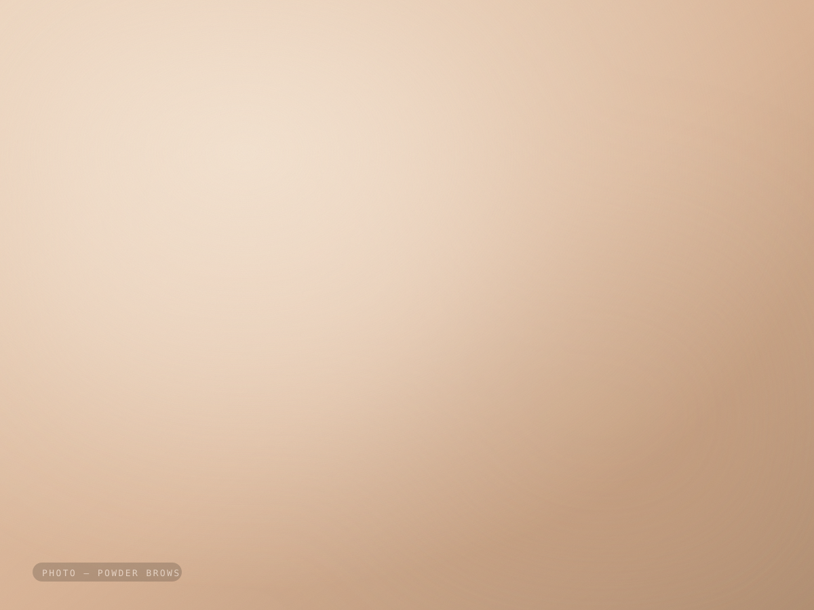
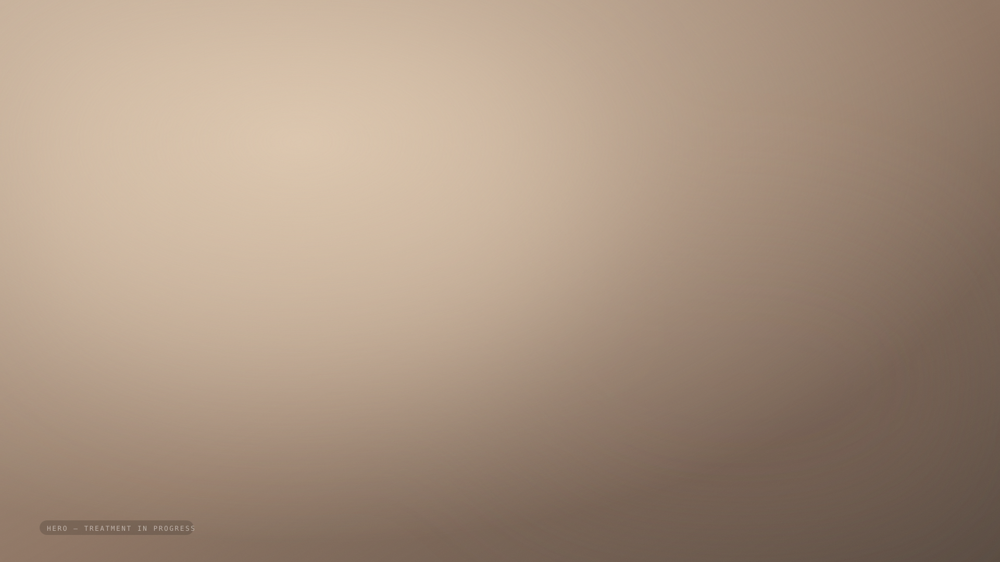
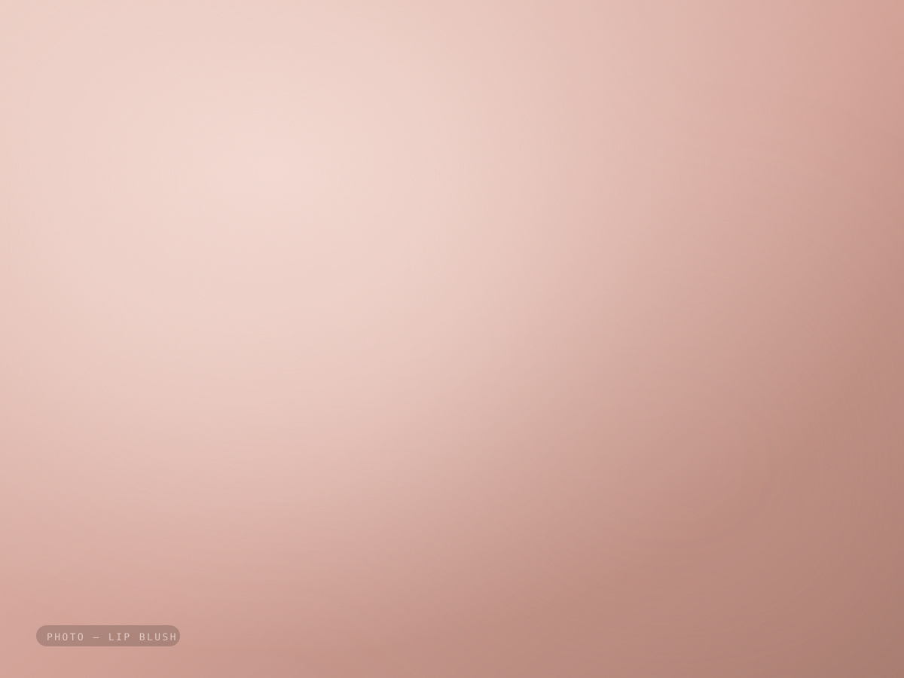
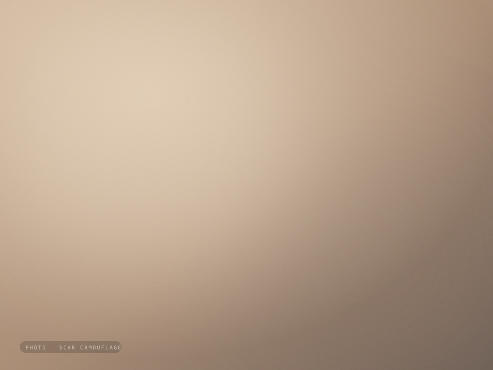

Пудровые брови
Мягкая растушёвка, как лёгкая пудра: воздушнее у начала, плотнее к хвостику. Форма строится по вашему лицу, а не по шаблону.

Русский PMU-мастер · Дубай и Шарджа
Пудровые брови, акварельные губы и камуфляж рубцов — с выездом к вам, с пигментом, смешанным под ваш подтон и проверенным на коже до первого прохода.
Что я делаю
Брови и губы — это про пропорции и цвет. Камуфляж — про то, чтобы взгляд перестал цепляться. Всё три начинаются одинаково: с чтения подтона при дневном свете.

Мягкая растушёвка, как лёгкая пудра: воздушнее у начала, плотнее к хвостику. Форма строится по вашему лицу, а не по шаблону.

Цвет вводится в саму губу: возвращается контур и выравнивается тон. Без помадной границы — губы выглядят как в свой лучший день.

Пигмент подбирается под кожу вокруг рубца, растяжки или пересадки и набирается за несколько визитов, пока контраст не уйдёт.
Специализация
Рубец не просто белый. Он другого цвета, чем кожа рядом, с другим подтоном, и ткань держит пигмент иначе. Чтобы попасть в тон, нужна смесь, проба на вашей коже и терпение на несколько визитов — поэтому большинство мастеров за это не берётся.
Выберите тон, ближайший к коже вокруг рубца. Панель покажет, с чего начинается первый визит: база плюс корректор, намеренно светлее цели — пигмент темнеет при заживлении.
MS-04
Схема наглядная. Настоящий подбор всегда смешивается и проверяется на вашей коже на консультации.
Результаты
Зажившие работы, снятые при дневном свете без фильтров. Свежий результат всегда выглядит ярче зажившего — здесь именно зажившие.

 До
После
До
После

 До
После
До
После

 До
После
До
После
Чего ожидать
Ярче всего цвет выглядит в первый день и оседает за четыре недели. Знание последовательности — то, что избавляет от паники на третий день.
День 0
Цвет на 30–40% темнее итогового. Небольшой отёк на губах — норма.
День 2–3
Пигмент окисляется и выглядит плотным. Именно на этом этапе клиенты переживают. Это проходит.
День 4–7
Тонкий слой сходит сам. Не сдирайте — вместе с ним уходит пигмент.
День 8–14
Новая кожа закрывает пигмент, цвет кажется пятнистым и выцветшим. Он вернётся.
День 28
Виден настоящий цвет. В этот момент записываемся на коррекцию и правим неровности.
Коррекция — через четыре-восемь недель после первого визита. Это часть процедуры, а не допродажа: первый проход строит базу, второй задаёт финальный цвет.
Выезд на дом
Дубай и Шарджа. От вас — стол, розетка и около трёх часов. Всё остальное приезжает в кейсе.
Пришлите фото зоны при дневном свете и скажите, чего хотите. В ответ — честная оценка: что реально сделать и за сколько визитов.
Разбираем анамнез, делаем тест пигмента и согласовываем форму или подбор цвета. Ничего не вводится, пока вы не скажете «да» перед зеркалом.
Два-три часа на брови или губы, один-три — на зону камуфляжа. Стерильные одноразовые расходники вскрываются при вас.
Письменные рекомендации, связь в неделю заживления и коррекция через четыре-восемь недель.
Отзывы
Эти три места ждут настоящих цитат — из переписок в Instagram и с Google, с разрешения клиенток.
Здесь будет отзыв клиента — две-три фразы её словами.
Здесь будет отзыв клиента — две-три фразы её словами.
Здесь будет отзыв клиента — две-три фразы её словами.
Перед записью
Анестезия наносится до и во время процедуры. Брови большинство описывает как царапание, губы — как тёплое жужжание. Камуфляж на теле обычно переносится легче всего.
За неделю до менструации кожа чувствительнее — это стоит учесть при записи.
Пудровые брови — один-два года, губы — один-три, в зависимости от типа кожи, солнца и ухода. Камуфляж выцветает медленно и обновляется по необходимости.
Кислоты, ретинол и активное солнце сокращают срок для всего.
Обычно не раньше двенадцати месяцев и только после того, как хирург или врач подтвердит, что рубец полностью созрел, закрыт и больше не меняется. Работа раньше срока может повлиять на то, как он сядет.
Запись
Пришлите фото в WhatsApp — и получите честный ответ: что возможно, сколько нужно визитов и сколько это стоит. Без обязательств.